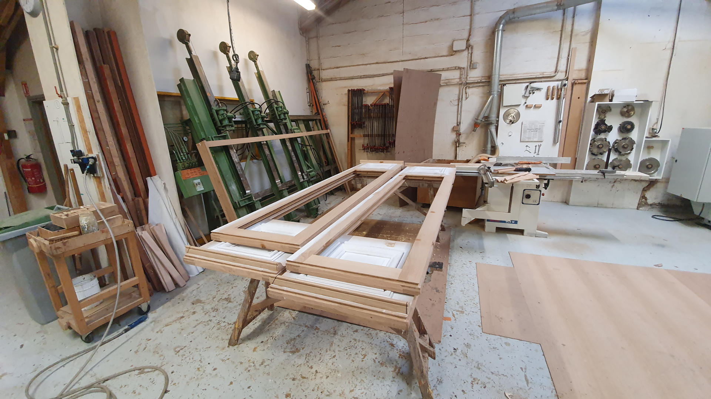

door_front À propos de PorteShop
Bienvenue sur PorteShop, la boutique en ligne qui transforme votre manière d’aménager vos espaces. Spécialisés dans la conception et la vente de portes design, modernes et fonctionnelles, nous mettons notre savoir-faire au service de vos projets — qu’il s’agisse de votre maison, de vos bureaux ou de vos créations architecturales.
Notre mission : allier élégance, innovation et simplicité pour que chaque porte devienne un véritable élément de décoration. Parce qu’une porte, ce n’est pas juste un passage, c’est la première impression d’un lieu.
info Qui sommes-nous ?
Chez PorteShop, nous croyons que la porte n’est pas qu’un simple passage : c’est le premier contact avec votre intérieur, un symbole d’accueil, d’intimité et de style. C’est pourquoi nous proposons une sélection unique de portes et d’accessoires alliant design, durabilité et innovation.
Notre équipe est composée de jeunes designers, d’artisans passionnés et de développeurs web réunis autour d’une même idée : simplifier l’achat de portes de qualité en ligne. Nous travaillons avec des fabricants français et européens pour garantir des produits à la fois esthétiques, solides et respectueux de l’environnement.
Aujourd’hui, PorteShop s’adresse à tous : particuliers, architectes ou entreprises, en offrant une plateforme moderne, intuitive et centrée sur l’expérience utilisateur. Nous faisons de chaque commande une collaboration unique et sur mesure.
favorite Nos valeurs
Durabilité
Nous privilégions des matériaux responsables et des partenaires respectueux de l’environnement.
Design
Chaque porte est pensée comme une œuvre, un équilibre entre esthétique et fonctionnalité.
Qualité
Nos produits passent par un contrôle rigoureux pour garantir la satisfaction totale de nos clients.
history Notre histoire
L’aventure PorteShop débute en 2025, dans un petit atelier belfortain où quatres étudiants en BUT informatique et imaginent une nouvelle manière d’acheter ses portes. Frustrés par le manque de transparence et de personnalisation dans les magasins traditionnels, ils décident de créer une boutique en ligne à la fois élégante, simple et accessible à tous.
Après plusieurs mois de recherche et de développement, la première version du site voit le jour. Grâce à son interface claire, à son moteur de recherche intuitif et à la qualité de ses modèles, PorteShop séduit rapidement de nombreux particuliers et professionnels du bâtiment.
Aujourd’hui, nous continuons d’innover chaque jour pour proposer de nouveaux designs, de meilleures finitions et une expérience d’achat toujours plus fluide. PorteShop grandit, mais garde une promesse : offrir des produits fabriqués avec passion, et un service humain au cœur du digital.
mail Contactez-nous
Une question, une demande ou un projet ? L’équipe PorteShop vous répond sous 24h.